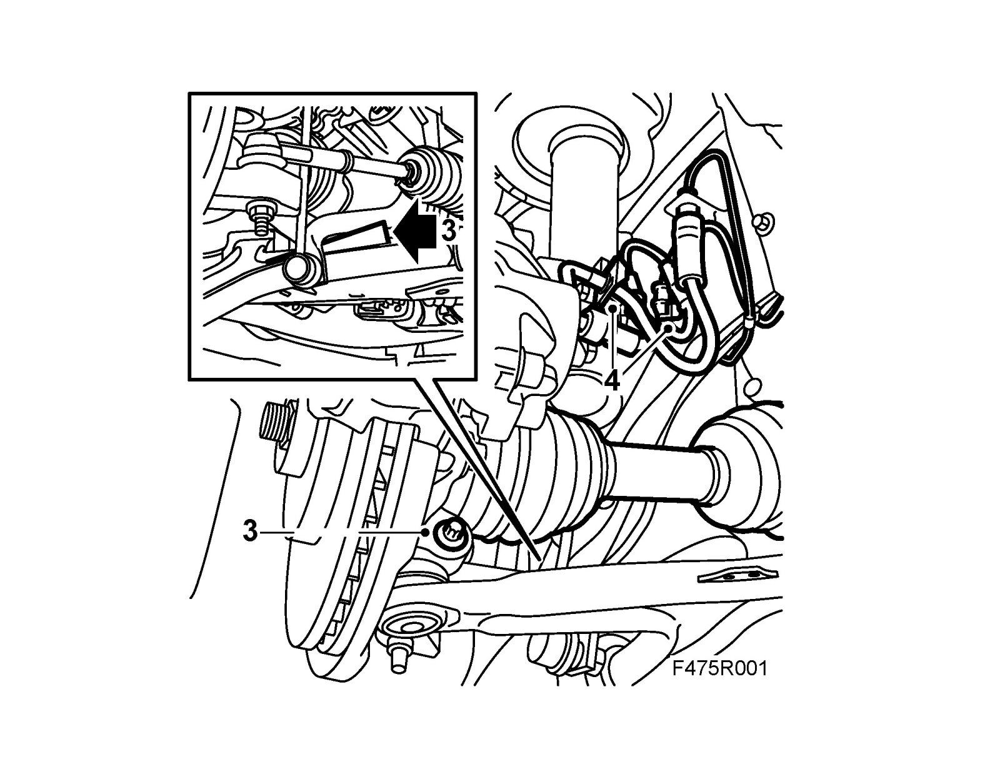
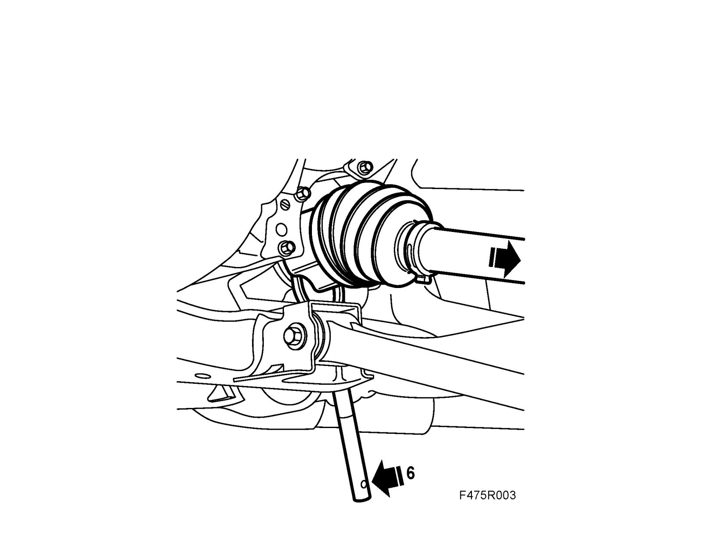
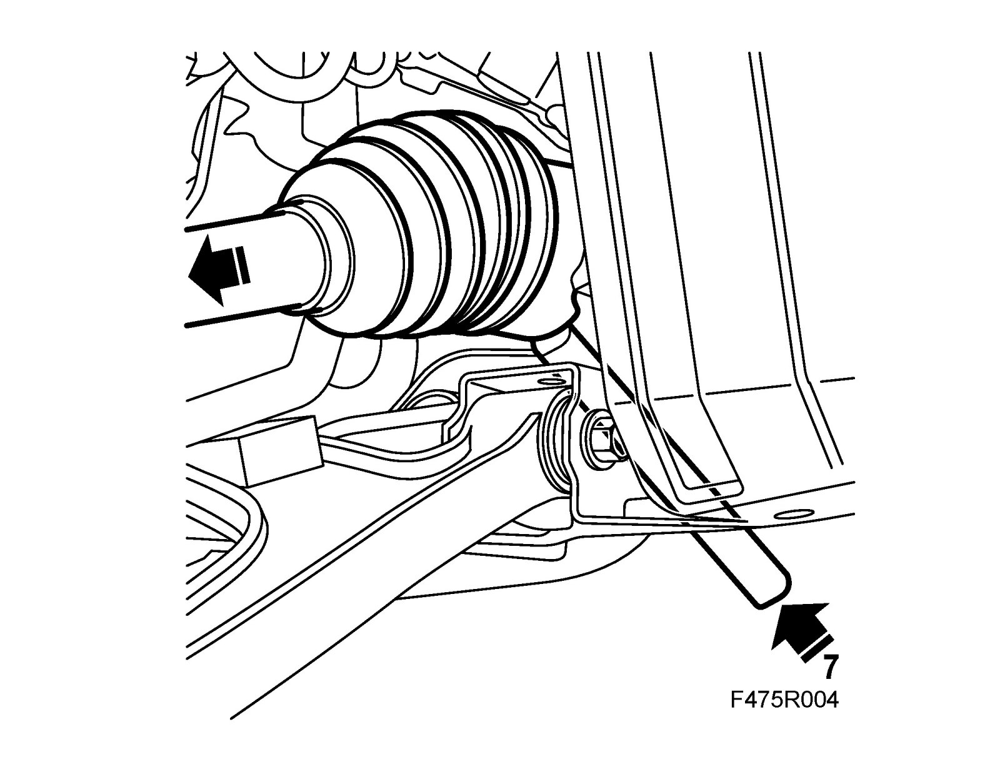
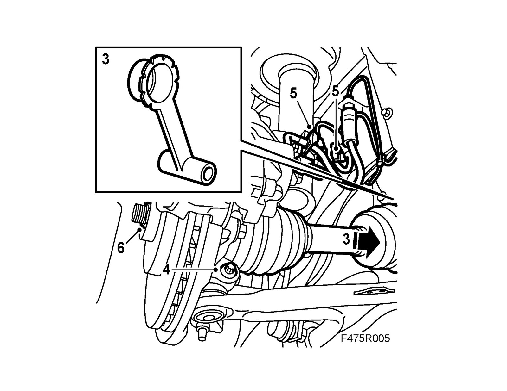

Axle Shaft Assembly: Service and Repair
Drive shaftsTo remove
1. Raise the car and remove the wheel.
2. Remove the wheel hub center nut.
Z19: Remove the lower engine cover.
CV: Remove Chassis reinforcement, front subframe, CV

3. Remove the steering swivel member bolt, lower the suspension arm and place a 83 95 238 Wedge between the suspension arm and the anti-roll bar.
4. Detach the brake hose from the clip and the ABS cable holder. Turn the wheel for better access.
5. Press out the drive shaft from the wheel hub about 10 mm. Use 89 96 951 Puller.
6. Left-hand side: Pull out the drive shaft from the gearbox. Pry with 87 92 616 Removal tool, drive shafts. Lift out the drive shaft. Collect the oil in a receptacle.

7. Right-hand side: Tap out the drive shaft from the intermediate shaft with a brass drift and mallet. Lift out the drive shaft.
Warning
Use protective goggles to protect against flying splinters of metal.

To fit
1. Left-hand side: Change the shaft seal in the gearbox, see Drive shaft seal, left hand.
2. Fit the drive shaft into the wheel hub.
3. Left-hand side: Fit 83 95 162 Protective collar, drive shafts and fit the drive shaft into the gearbox. Lubricate the shaft splines with gearbox oil. Pull out the collar when about 20 mm is left. Press in the shaft until the circlip snaps in place.
Right-hand side: Fit the drive shaft in the intermediate shaft splines. Lubricate the shaft splines using 90 513 210 Universal paste. Make sure that the seal to the intermediate shaft is fitted.

Important
Press up the pin carefully.
The groove in the pin must be visible in the screw hole in the spindle housing.
If the rubber gaiter is pressed down, it will not seal properly to the swivel pin.
4. Remove the wedge and attach the ball joint to the steering swivel member. Fit the bolt and nut. Torque tighten the nut.
Tightening torque 50 Nm (37 lbf ft)
5. Fit the brake hose in the clip and the ABS cable in the holder.
6. Fit a new hub center nut loosely.
7. Fit the wheel. See Wheels.
8. Lower the car and tighten the hub center nut.
Tightening torque 230 Nm (170 lbf ft)
9. Press the protective washer securely on the wheel.
10. Left-hand drive shaft: Fill the gearbox with oil, refer to Refilling/changing the gearbox oil (man) and Checking the transmission fluid level (auto). Service and Repair Checking the Transmission Fluid Level
CV: Fit Chassis reinforcement, front subframe, CV.
Z19: Fit the lower engine cover.